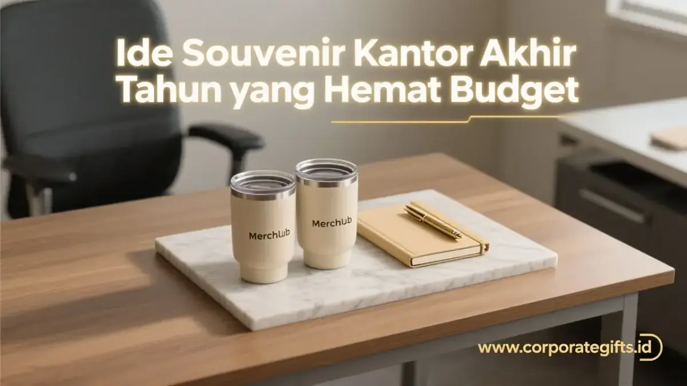

Corporate Gifts ID - Souvenir kantor akhir tahun hemat budget adalah barang fungsional bernilai guna efisien, seperti pulpen custom, tumbler, atau tote bag, yang tetap memberi kesan profesional tanpa membebani anggaran promosi perusahaan. Kuncinya terletak pada pemilihan produk yang sering dipakai sehari-hari sehingga branding perusahaan terus terlihat tanpa perlu biaya besar per unit.
Poin Kunci Souvenir Akhir Tahun Hemat Budget:
- Fungsional & Elegan: Souvenir hemat budget tidak berarti murahan. Pemilihan produk fungsional dan desain minimalis tetap memberi kesan elegan.
- Frekuensi Pemakaian Tinggi: Produk paling efisien adalah barang yang sering dipakai harian seperti alat tulis, tumbler, dan aksesori kerja.
- Nilai Tambah Ramah Lingkungan: Pilihan eco-friendly seperti tote bag dan tumbler BPA-free menambah nilai citra sosial dan kepedulian lingkungan perusahaan.
- Kemasan Rapi: Kemasan sederhana namun rapi seperti box kraft paper mampu menaikkan persepsi nilai souvenir secara signifikan.
Kenapa Souvenir Kantor Akhir Tahun Tetap Penting Meski Budget Terbatas?
Souvenir akhir tahun tetap penting karena menjadi bentuk apresiasi nyata kepada karyawan dan klien sekaligus media branding jangka panjang. Setiap perusahaan punya batas anggaran promosi tahunan, namun batasan tersebut tidak harus mengorbankan kesan profesional.
Efisiensi biaya bisa dicapai dengan cara memprioritaskan pengeluaran pada item yang memberi dampak paling besar. Produk yang dipakai berulang kali memberi nilai promosi yang jauh lebih tinggi dibanding produk sekali pakai. Semakin sering souvenir digunakan, semakin lama juga logo dan identitas perusahaan Anda terlihat oleh penerimanya.
Kategori Souvenir Fungsional dengan Biaya Efisien
Memilih souvenir fungsional memastikan setiap rupiah yang dikeluarkan berdampak langsung terhadap retensi kemitraan dan motivasi tim kerja.
1. Pilihan Alat Tulis dan Stationery Custom yang Hemat
Alat tulis dan stationery custom adalah kategori souvenir kantor paling ekonomis karena biaya produksinya relatif rendah namun tingkat pemakaiannya sangat tinggi. Produk ini cocok untuk pembelian dalam jumlah massal tanpa membebani anggaran akhir tahun.
| No | Ide Souvenir | Alasan Efisiensi & Branding |
|---|---|---|
| 1 | Pulpen Eksklusif Custom | Pilihan paling ekonomis. Bahan logam chrome atau soft touch membuatnya tampak premium meski harga terjangkau. |
| 2 | Kalender Meja Custom | Souvenir wajib tiap tahun baru. Menjamin brand visibility selama 365 hari di meja kerja penerima. |
| 3 | Notebook / Blocknotes Mini | Ideal untuk produksi massal. Kustomisasi cukup pada cover untuk menekan biaya cetak. |
| 4 | Sticker Pack Custom (Vinyl) | Murah, tren, dan serbaguna. Bisa ditempel di laptop, tumbler, atau gadget sebagai media promosi bergerak. |
2. Pilihan Aksesori Kerja dan Digital yang Cocok Jadi Souvenir
Aksesori kerja dan digital cocok jadi souvenir karena nilai fungsionalnya tinggi dan sering dipakai di lingkungan kantor. Kategori ini memberi kesan modern tanpa menambah biaya produksi besar.

Pilihan pulpen chrome, kalender meja, dan tumbler ramah lingkungan sebagai media branding akhir tahun berbiaya efisien.
| No | Ide Souvenir | Alasan Efisiensi & Branding |
|---|---|---|
| 5 | Gantungan Kunci Akrilik / Karet Custom | Bisa dibentuk sesuai maskot atau identitas merek. Desain unik memancing perhatian penerima. |
| 6 | USB Flash Drive Kartu | Fungsional bagi karyawan dan klien. Area branding luas dan mudah disimpan di dompet. |
| 7 | Mousepad Custom | Media promosi visual yang selalu terlihat saat bekerja. Pilih bahan ergonomis untuk kenyamanan pengguna. |
| 8 | Phone Holder Pop-Up | Aksesori kecil namun berguna. Branding logo sederhana dengan desain minimalis sudah cukup elegan. |
Souvenir Ramah Lingkungan sebagai Nilai Tambah Branding
Souvenir ramah lingkungan tidak hanya efisien, tetapi juga membawa pesan positif mengenai komitmen keberlanjutan (ESG) perusahaan.
Tote Bag dan Tumbler Custom sebagai Alternatif Hemat
Tote bag dan tumbler custom menjadi pilihan favorit karena menggabungkan efisiensi biaya dengan citra kepedulian lingkungan. Produk ini dipakai berulang kali sehingga umur pakainya jauh lebih panjang dibanding souvenir sekali pakai:
- Tote Bag Spunbond atau Lipat: Solusi multifungsi yang bisa digunakan berulang kali untuk belanja maupun membawa dokumen kerja harian.
- Tumbler BPA-Free (Plastik atau Wheat Straw): Alternatif tumbler stainless yang lebih hemat biaya namun tetap aman, fungsional, dan higienis.
Pouch Kanvas dan Produk Eco-Friendly Lainnya
Pouch kanvas mini adalah pelengkap ideal untuk kategori souvenir eco-friendly. Produk ini serbaguna karena bisa dipakai menyimpan alat tulis, charger kabel, atau kosmetik. Sablon logo sederhana pada kain kanvas terlihat sangat estetik dan berkelas tanpa proses cetak yang mahal.
Bagaimana Cara Menciptakan Kesan Berkelas dari Souvenir Hemat Budget?
Kesan berkelas dari souvenir hemat budget diciptakan lewat kemasan rapi dan sentuhan personalisasi, bukan semata-mata ditentukan oleh tingginya harga produk. Tiga langkah taktis berikut bisa langsung diterapkan oleh tim General Affairs maupun HR:
- Kemasan Minimalis Elegan: Gunakan packaging box kraft paper berbahan daur ulang dengan stiker logo foil emas atau pita satin untuk sentuhan eksklusif.
- Kartu Ucapan Personal: Sisipkan kartu ucapan terima kasih dengan pesan hangat dari jajaran direksi untuk memperkuat ikatan emosional.
- Konsistensi Tema Visual: Terapkan palet warna korporat yang selaras antara produk, pita, dan kartu ucapan agar paket terlihat rapi dan terkurasi.
Solusi Pengadaan Souvenir Kantor Akhir Tahun Siap Pakai
Seluruh kategori souvenir di atas, mulai dari stationery, aksesori digital, hingga produk ramah lingkungan, tersedia lengkap dalam katalog CorporateGifts.ID. Anda tidak perlu repot mencari banyak vendor terpisah untuk mendapatkan kombinasi produk yang sesuai dengan batasan anggaran.
Souvenir kantor akhir tahun hemat budget tetap bisa tampil profesional jika fokus pada utilitas produk, desain rapi, dan presentasi kemasan yang thoughtful. Kunjungi katalog souvenir perusahaan kami untuk melihat pilihan produk siap custom logo.
Pertanyaan Seputar Souvenir Kantor Akhir Tahun (FAQ)

Ditulis oleh: Arinda Zakia
Senior Corporate Gifting SpecialistSpesialis strategi merchandise korporat, kurasi hampers eksekutif, dan budgeting souvenir promosi B2B dengan pengalaman lebih dari 7 tahun membantu ratusan instansi dan korporasi di Indonesia.
Lihat Profil Lengkap & Panduan Lainnya